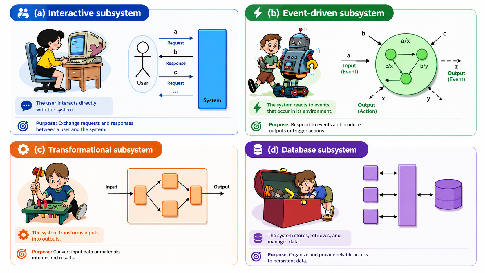

Know Your System Type
Before choosing an architecture, classify the dominant behavior. Different kinds of systems need different design methods.
Distinguish interactive, event-driven, transformational and object-persistence systems using their characteristic flows, actors, state and timing behavior.
Do not classify by name — classify by behavior
Interactive System
Actor-system interaction carries out a business task through a relatively fixed sequence of requests and responses.
Event-Driven System
External events arrive without a fixed request order; response depends on the current system state.
Transformational System
A network of processing activities transforms input into substantially different output, usually with little actor interaction during processing.
Object-Persistence System
Provides efficient storage, retrieval and update of persistent objects while hiding storage implementation from other subsystems.
Two real scenarios for each system type
For every example, follow the workflow and then read Why this classification fits. Classify the dominant behavior of the named subsystem, not every feature of the larger product.
Interactive Systems
The defining feature is a human-led dialogue: a user starts a task, makes requests, receives responses, and advances through recognizable steps.
University Course Registration
Scenario: A student signs in, searches available sections, selects a course, and submits an enrollment request. The system checks prerequisites, seat capacity, and timetable conflicts, then confirms registration or explains why it failed.
Student signs in → selects section → system validates → student confirms → enrollment result.
This is interactive because the student initiates and guides a multi-step business transaction. The system responds to each action, and session state tracks progress from selection to confirmation. The database is supporting infrastructure, not the dominant behavior.
ATM Cash Withdrawal
Scenario: A customer inserts a card, enters a PIN, chooses withdrawal, specifies an amount, and waits for authorization. The ATM shows approval or rejection, dispenses cash when approved, and ends the session.
Card/PIN → withdrawal request → balance and limit checks → cash or rejection → session ends.
This is interactive because the customer controls the ordered request–response dialogue. Authentication and withdrawal are steps in one user-facing task; the ATM tracks which step is active. Its hardware signals do not change the dominant classification of this withdrawal workflow.
Event-Driven Systems
The defining feature is a reaction to events whose arrival order or timing is not controlled by one user-led transaction.
Smart Traffic Intersection Controller
Scenario: Vehicle detectors report approaching cars, pedestrian buttons generate crossing requests, and an emergency-vehicle sensor can demand priority. The controller processes these signals against the current light phase and safety timers.
Sensor event → inspect current signal state → apply safety rules → change or hold lights.
This is event-driven because independent signals can arrive in unpredictable order. The same pedestrian request can produce different actions depending on the current phase, elapsed clearance time, and emergency priority. Timely reactions and state-dependent decisions are central.
Hospital Patient Monitoring Alarm
Scenario: Bedside devices continuously emit measurements such as heart rate and oxygen saturation. When a threshold is crossed, a sensor disconnects, or an alarm is acknowledged, the monitoring controller updates alerts and notifies clinicians.
Measurement or device event → evaluate patient/alarm state → raise, update, or clear alert.
This is event-driven because physiological and device events arrive asynchronously, not as steps in a fixed user dialogue. Response depends on current alarm state, thresholds, and acknowledgment status; prompt handling can be safety-critical.
Transformational Systems
The defining feature is a processing pipeline that converts supplied inputs into a substantially different output, with little human interaction during execution.
University Payroll Processing Engine
Scenario: At the end of a pay period, the engine reads employee contracts, attendance, allowances, and deductions. It validates inputs, calculates gross and net pay, and produces payslips and bank-transfer instructions.
Payroll inputs → validation → calculations → deductions → payslips and payment file.
This is transformational because the primary job is to transform a dataset into computed outputs through a defined processing sequence. A person may launch the job, but does not guide each calculation interactively. Stored employee records support the process rather than define its main behavior.
Image Processing Pipeline
Scenario: A service receives raw images and a processing configuration. It decodes the files, corrects exposure, removes noise, resizes images, and encodes optimized outputs, often processing many files in a batch.
Raw images → decode → enhance → resize → encode → optimized images.
This is transformational because the system applies a sequence of computations that changes the representation and properties of input data. Once processing begins, it usually runs without continuous user dialogue; its focus is data flow and transformations.
Object-Persistence Systems
The defining feature is a subsystem whose main responsibility is durable object storage, retrieval, and updates behind a stable interface.
University Student Records Repository
Scenario: Other university services call a repository API to save a student's profile, fetch an academic record by ID, update contact details, or retrieve enrollment history. The repository manages indexing, transactions, and durable storage.
Service request → repository interface → read/write persistent records → result.
This is persistence-focused because its core responsibility is keeping student objects available and consistent across sessions. It hides whether records live in relational tables or another storage engine. Course eligibility decisions belong in other services, not in the repository itself.
Digital Library Document Repository
Scenario: A digital-library application asks its storage service to save document metadata, retrieve a book record, update catalog fields, or remove an obsolete record. The service preserves records and exposes stable lookup and update operations.
Catalog service → save/find/update document object → durable storage → response.
This is persistence-focused because storing and retrieving durable document objects is the subsystem's purpose. Search screens and borrowing workflows may be interactive, but this repository primarily supplies data operations and hides storage details from its callers.

What changes from one type to another?
| Question | Interactive | Event-Driven | Transformational | Persistence |
|---|---|---|---|---|
| Primary stimulus | Actor requests | External events | Input data | Storage/retrieval requests |
| Sequence | Relatively fixed | Not fixed | Processing flow | Operation-driven |
| State role | Tracks business-process progress | Determines response | Usually stateless | Persistent data state |
| Actor interaction | Frequent | Often devices/software | Little during processing | Supports other subsystems |
A large system can contain all four
A system can be a subsystem of a larger system, and one system can contain several subsystem types. Classification is therefore relative to the subsystem being designed.
May contain many behavioral types.
Could be interactive.
Could be event-driven.
Could be transformational.
Could be persistence-focused.
The examples above are study clarifications; the four behavioral definitions and recursive-system rule come from the supplied lecture.
Human dialogue → Interactive. Reactive signals → Event-driven. Input becomes output → Transformational. Data survives → Persistence.